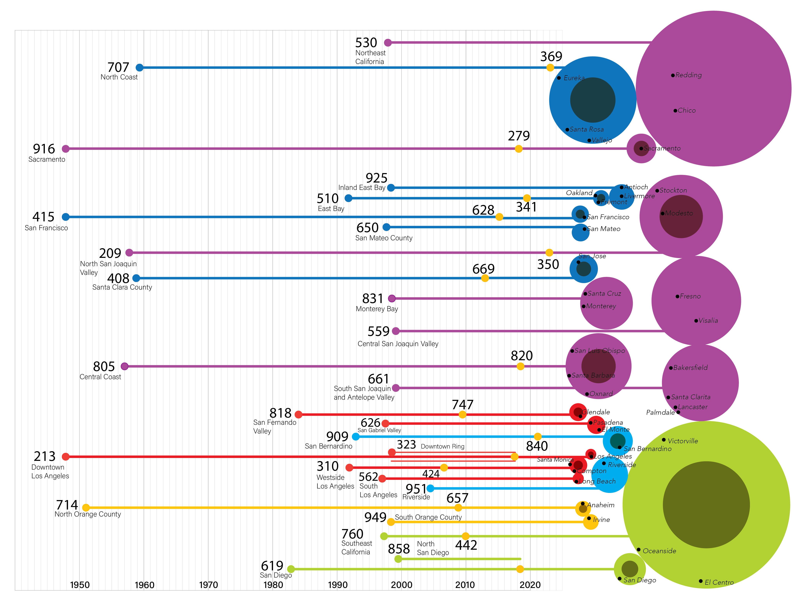
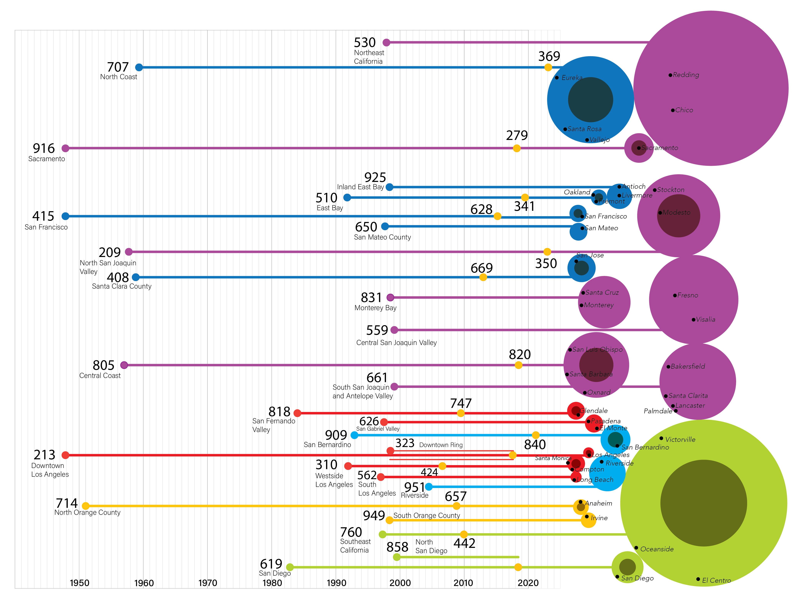

Machine Learning
Class project for CS7641, investigating 3D Gaussian Splatting
Neighborhood Toponymy Project
Investigating the relationship between neighborhood name and income
William Edmondson Homesite Project
Mapping the forgotten bounds of a famous Nashville sculptor through georeferencing
Architecture Portfolio
Five curated projects investigating themes in history and identity through space
3D Gaussian Splatting Project
Fall 2025
Semester-long Machine Learning (CS7641) project mixing computer vision techniques to reconstruct 3D environments from 2D images. In progress...
Neighborhood Topnymy Project
Fall 2023
My final project for Intro to GIS and Remote Systems class examines
the relationship between median household income and neighborhood
toponymy, the study of place names. This project examined 19 types
of common place suffixes (e.g. containing the word "park",
"heights", etc.) across 27 of the largest US cities (3721
neighborhoods in total), and the local and global patterns in
income.
Using hot spot analysis and statistical tests on income aggregated
on neighborhood name, no statistically significant correlation was
found between neighborhood name and income. However, many local
patterns hinted at a mediating role that geography plays in income
differences that are present.
William Edmondson Homesite Project
Summer 2024
The fight to preserve the pioneering African-American sculptor
William Edmondson's legacy has been a decades-long fight between the
city of Nashville, private developers, and the working-class
Edgehill community he once called home. After his neighborhood's
houses were cleared following Nashville's urban renewal, today an
elementary school with a beloved memorial garden sits on the land, a
space whose future has recently been put into question once again.
As a research assistant at the Vanderbilt Institute for Spatial
Research, I georeferenced a catalog of historical housing, zoning,
and aerial maps and site plans of Edmondson's Edgehill community.
Understanding the spatial relationship between Edmonson's Edgehill
and modern Edgehill can offer us clues into how the rooted Edgehill
community has experienced and reacted to change amidst the boom and
rebranding of one of America's fastest growing cities.
M.Arch Portfolio
Fall 2024
M.Arch portfolio consisting of 5 works created throughout my
exploration of the built environment in my undergrad career. The
most dominant themes I explored during my studies, expressed
strongly throughout these projects, are the role that history plays
in shaping modern space and identity
Having always had a passion for data visualization and optimizing
the learning of complex information in digestible ways, many of my
projects serve as case studies for how vastly different forms of
media can be expressed succintly, whether that be through 3D space,
multimedia maps, or collages.
 
